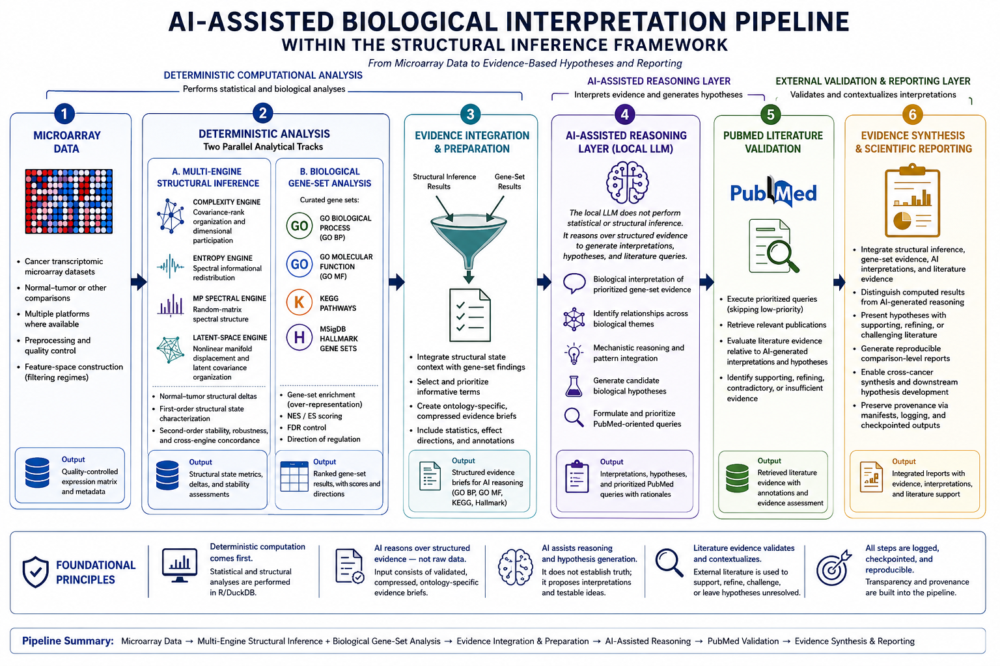

AI-Assisted Reasoning Framework
From Deterministic Structural Inference to Literature-Grounded Hypothesis Generation
Overview
The Structural Inference Framework characterizes cancer transcriptomes through quantitative analysis of their global organization and biological context.
Artificial intelligence enters this framework at a specific and deliberately bounded stage.
The language model does not analyze raw microarray data, calculate structural descriptors, perform statistical inference, or determine whether a biological hypothesis is true. These tasks remain outside the AI reasoning layer.
Instead, the framework uses a local large language model as an AI-assisted reasoning layer positioned between deterministic computational analysis and external literature retrieval.
Its role is to reason over structured evidence produced by the analytical pipeline, identify biologically coherent relationships, develop candidate mechanistic interpretations and hypotheses, and formulate literature-oriented questions that can subsequently be examined against the scientific literature.
The central architecture can therefore be summarized as:
Computation establishes the observations → AI reasons over the observations → literature contextualizes the reasoning → reporting preserves the distinction.
This separation is fundamental to the design of the framework. AI is used neither as a replacement for statistical analysis nor as an independent source of scientific evidence. It serves as a controlled reasoning mechanism within a larger reproducible analytical workflow.
AI-Assisted Biological Interpretation Pipeline
The overall architecture of the AI-assisted reasoning framework is shown below.

The figure emphasizes three distinct functional layers:
- Deterministic computational analysis
- AI-assisted reasoning
- External literature retrieval, evaluation, and scientific reporting
Maintaining these distinctions is important because each layer has a different epistemic role in the framework.
1. Microarray Data
The pipeline begins with transcriptomic microarray datasets representing defined biological comparisons, including normal–tumor comparisons and, where appropriate, comparisons between biologically distinct malignant states.
The analytical workflow may include multiple experimental platforms and multiple feature-space filtering regimes.
Preprocessing and quality-control procedures are completed before downstream structural or biological analyses are performed.
The resulting expression matrices provide the common experimental foundation for two complementary analytical branches.
2. Deterministic Computational Analysis
The microarray data are analyzed through two conceptually parallel computational tracks.
Multi-Engine Structural Inference
The Structural Inference Framework characterizes transcriptomic organization using four complementary analytical engines:
- Complexity engine, examining covariance-rank organization and dimensional participation;
- Entropy engine, examining spectral informational redistribution;
- Marchenko–Pastur spectral engine, examining random-matrix spectral structure;
- Latent-space geometry engine, examining nonlinear manifold displacement and latent covariance organization.
Together, these engines characterize changes in transcriptomic organization rather than focusing exclusively on changes in individual genes.
The resulting analyses include structural state metrics, comparison deltas, perturbational geometry, and assessments of stability and cross-engine concordance.
These quantities are calculated computationally before any language model is invoked.
Biological Gene-Set Analysis
In parallel, the transcriptomic data are analyzed using curated biological gene sets.
The current biological reasoning pipeline focuses on four evidence classes:
- Gene Ontology Biological Process (GO BP),
- Gene Ontology Molecular Function (GO MF),
- KEGG pathways,
- MSigDB Hallmark gene sets.
These analyses provide a biological annotation layer that complements the mathematical description of transcriptomic structure.
Computationally, structural inference and biological gene-set analysis are parallel analytical branches. Both remain upstream of the AI-assisted reasoning process.
3. Evidence Integration and Preparation
The language model is not given raw expression matrices or asked to independently discover statistical patterns.
Instead, deterministic R preprocessing transforms analytical results into structured evidence suitable for downstream reasoning. This stage includes:
- discovery of configured cancer comparisons;
- export of comparison-specific biological evidence packets;
- construction of a collapsed gene-set index;
- mode-specific interpretation rules;
- ontology-specific LLM briefs for GO BP, GO MF, KEGG, and Hallmark.
This intermediate evidence layer reduces irrelevant or redundant information and preserves the provenance of the evidence being interpreted.
The formal handoff from deterministic preprocessing to AI reasoning is the set of ontology-specific *_llm_brief.txt files.
4. The AI-Assisted Reasoning Layer
The local large language model occupies a specific position in the framework.
Its purpose is reasoning, not measurement.
The model consumes structured evidence briefs and performs downstream interpretive tasks, including:
- interpreting prioritized biological evidence within the relevant cancer context;
- identifying relationships among related or overlapping biological terms;
- consolidating redundant ontology annotations into broader biological themes;
- developing candidate mechanistic interpretations;
- generating candidate biological hypotheses;
- distinguishing observations from hypotheses;
- formulating prioritized PubMed-oriented literature queries.
The model’s output is not treated as validated scientific knowledge. It is retained as a reasoning artifact: a structured proposal about how the observed evidence might be understood.
Current Python reasoning architecture
The current implementation separates probabilistic model execution from deterministic software controls:
01 — Execute local LLM and capture raw responses
↓
02 — Normalize raw responses and build canonical artifacts
↓
03 — Validate canonical reasoning artifacts
↓
04 — Retrieve PubMed literature using validated, prioritized queries
↓
05 — Benchmark operational performance and pipeline completenessThis separation is important. The local model may vary in formatting, while normalization, schema validation, artifact gating, priority policy, checkpointing, and persistence are deterministic.
Raw capture, normalization, and validation
The model response is first preserved without requiring immediate schema compliance.
Local LLM
↓
Raw response checkpoint
↓
Deterministic lexical cleanup and normalization
↓
Canonical JSON reasoning artifact
↓
Independent artifact validationThis architecture prevents a formatting irregularity from destroying an otherwise useful model response. It also makes normalization decisions auditable.
Artifact validation assigns one of three statuses:
PASSPASS_WITH_WARNINGSFAIL
Only PASS and PASS_WITH_WARNINGS artifacts are eligible for PubMed retrieval.
5. PubMed Literature Retrieval and External Evaluation
Validated reasoning artifacts contain disease-contextualized PubMed queries and a theme priority.
The current retrieval policy is configuration-driven:
- high priority: retrieve;
- medium priority: retrieve with a smaller result window;
- low priority: skip.
The current software stage performs:
- validation-gated query execution;
- query-level checkpointing;
- rate-limited PubMed retrieval;
- configurable replacement or append-and-deduplicate persistence;
- storage of retrieved publication metadata in DuckDB;
- generation of query-level and pipeline-level manifests.
The software currently establishes a reproducible literature-retrieval layer. Scientific assessment of whether retrieved papers support, refine, challenge, or fail to resolve an AI-generated interpretation remains a separate interpretive task.
This distinction prevents retrieval counts from being mistaken for biological validation.
6. Evidence Synthesis and Scientific Reporting
The reporting layer should preserve the distinction between:
- computed structural inference results;
- computed biological gene-set results;
- AI-generated interpretations and hypotheses;
- retrieved literature records;
- human or formally evaluated literature assessment;
- integrated scientific synthesis.
The current pipeline already preserves provenance through raw responses, canonical artifacts, normalization records, validation manifests, PubMed manifests, DuckDB records, logs, and checkpoints.
A complete scientific synthesis layer remains an extension of the current implementation rather than an accomplished consequence of retrieval alone.
Current Implementation Status
The Python reasoning pipeline has completed an end-to-end proof-of-concept for the BLAD/TCC comparison:
- four ontology-specific LLM briefs executed locally;
- four raw responses captured;
- nineteen themes normalized into canonical artifacts;
- all four ontology artifacts passed the PubMed gate;
- fifteen themes were queried;
- four low-priority themes were skipped;
- sixty-one PubMed hit rows representing sixty distinct PMIDs were stored after a clean replacement run.
See Preliminary Results: BLAD/TCC Local LLM Biological Reasoning for the actual run outputs.
Foundational Principles
Deterministic computation comes first.
Statistical and structural analyses are performed before the language model is invoked.
AI reasons over structured evidence rather than raw data.
The language model receives compressed ontology-specific evidence briefs generated by the deterministic pipeline.
Probabilistic output is surrounded by deterministic controls.
Raw capture, normalization, schema validation, gating, retrieval policy, persistence, and benchmarking are implemented outside the model.
AI assists reasoning and hypothesis generation.
It proposes interpretations and testable ideas but does not establish biological truth.
Literature retrieval is not itself biological validation.
Retrieved records provide external evidence for subsequent scientific assessment.
Computed evidence and AI-generated reasoning remain distinguishable.
The reporting system preserves the provenance and epistemic status of each component.
The workflow is reproducible.
Evidence preparation, model execution, normalization, validation, literature retrieval, and benchmarking are logged and checkpointed.
Scope
The AI-Assisted Reasoning Framework remains under active development.
The current implementation establishes a reproducible architecture in which deterministic transcriptomic analysis can be extended into disciplined biological reasoning and literature-oriented hypothesis generation.
The architecture is modular. The analytical methods that generate structural and biological evidence remain independent of the particular language model used downstream. The present implementation uses a locally executed Gemma model through LM Studio, but alternative local or cloud reasoning backends can be evaluated without redesigning the upstream evidence architecture.